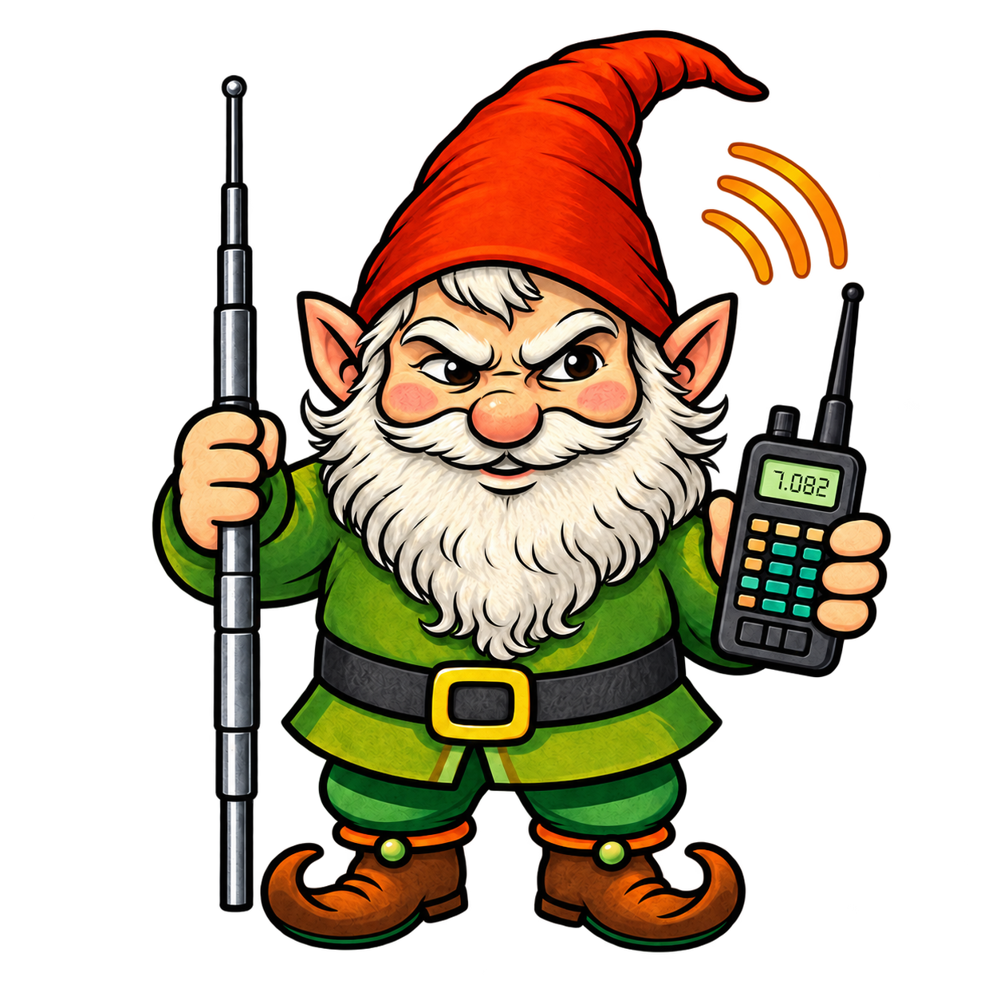

Windows Application
Precompiled Windows 10/11 x64 copy of LawnGnomeDX.
Download LawnGnomeDX
— Standing Small, Talking Tall —™
*Weak-signal keyboard messaging for amateur radio*
Choose a precompiled Windows or Ubuntu build for the simplest setup, or download the Python source if you prefer to run or compile LawnGnomeDX directly from source.
Precompiled Windows 10/11 x64 copy of LawnGnomeDX.
Download LawnGnomeDXPrecompiled Ubuntu copy of LawnGnomeDX.
Download LawnGnomeDX for UbuntuThe complete LawnGnomeDX Python source script.
Download Python SourceSetup, operation, file transfer, settings, and troubleshooting.
Download User ManualComplete No-Sale Source License Version 1.0 terms.
Download LICENSELawnChessDX — a turn-based chess game for radio.
Download LawnChessDX for Windows